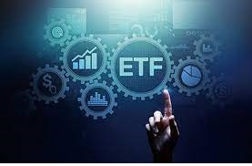

ETF
상장 지수 펀드(上場 指數 펀드) / Exchange Traded Fund(ETF) 상장
개방형 펀드. 주로 주가 지수나 채권가 지수 등 특정 지수를 추종하여
거래소에 상장되어 거래되는 펀드다. 인덱스 펀드가 그 모태가 되었다.
초기의 ETF는 주요 지수를 기초자산(underlying asset)으로 삼는
상품으로 발전을 해 오다가 이후 채권, 원자재, 통화, 레버리지, 인버스,
액티브 등 다양한 자산 또는 전략을 추적하는 상품들로 발전해 왔다.
액티브 ETF 보다는 지수를 추종하는 패시브 ETF가 한국 시장에서
발달했기 때문에 ETF를 한국에서는 상장지수펀드라고도 번역하여
부르지만 ETF라는 영어 이름 자체에는 '지수'라는 말은 안들어간다.
한국의 자본시장법에서 상장지수펀드라 부르기 때문에 ETF =
상장지수펀드가 되어 있지만 현재 ETF는 단순히 지수 추종만 하는 것이
아닌 사실상 액티브 펀드와 같은 성격의 ETF(=액티브 ETF)도 있기 때문에
그냥 ETF라고 부르는 것이 더 정확할 수 있다. 전 세계 약 200개
자산운용사가 발행하고 있으며, 자산 기준 상위 운용사로는
블랙록(38%)[1], SSGA(16%)[2], 뱅가드 그룹(14%)[3] 등이 있다. 기초
자산(대표적으로 주가 지수)이 올라가면 ETF 가격도 그만큼 올라가고,
기초 자산이 내려가면 ETF 가격도 그만큼 떨어지기 때문에 주식시장
문외한들이 쉽게 접근할 수 있다. 그리고 지수 추종이기 때문에 개별
기업에 대한 골치 아픈 재무제표 분석 등을 할 필요가 없다. 또한 기초
자산이 주가 지수, 파생(레버리지/인버스), 원자재, 해외 주식, 채권,
환율 등 다양하기 때문에 투자의 폭이 넓다. 워렌 버핏은 종목을
선택하는 능력이 부족한 대부분의 일반 개인 투자자들은 몇몇 기업에
집중 투자하는 것보다 미국의 주식 시장 대표 지수인 S&P 500을 추종하는
ETF를 사는 것이 현명하다고 말했고, 존 보글은 잦은 매매의 유혹을
경계한다면 투자 종목 선정 안목이 부족한 개인 투자자들에게 ETF는
최고의 선택이라고 언급했다. 세계 최대 헤지펀드인 브리지워터
어소시에이츠를 이끌고 있는 레이 달리오의 투자 전략 중 하나인 퓨어
알파(Pure Alpha) 펀드는 ETF로 포트폴리오의 약 90%를 채우는 것으로
유명하다.
REITs
리츠(Real Estate Investment Trusts)*란 부동산투자회사법 제2조제1호에
따라 다수의 투자자로부터 자금을 모아 부동산, 부동산 관련 증권 등에
투자·운영하고 그 수익을 투자자에게 돌려주는 부동산 간접투자기구인
주식회사임.
리츠는 1960년 미국에서 최초 도입을 시작으로 2000년 이후 유럽 및
아시아로 급속히 확산되었으며, 우리나라는 1997년 외환위기 이후
기업들의 보유 부동산 유동화를 통한 기업구조조정을 촉진하기 위해
「부동산투자회사법」을 제정(2001.5.7)하여 처음 도입되었음.